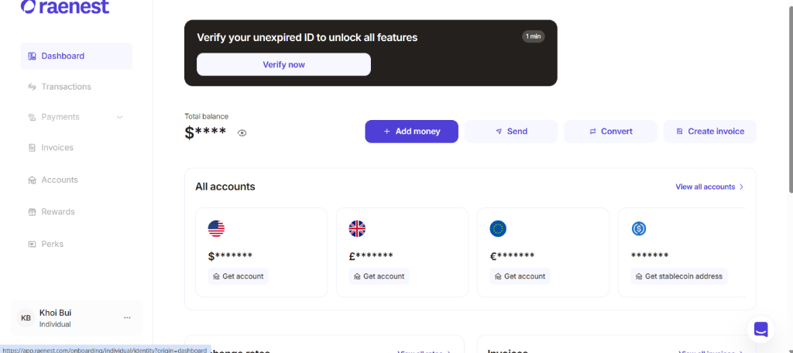

From Freelance Invoice to 7% APY and Everyday Spending: How Raenest Turns Stablecoins on Solana Into Borderless Money
A practical walkthrough of how remote workers, crypto builders, and global businesses use Raenest to receive USDT/USDC on Solana, convert 1:1 to USD, earn up to 7% APY in Vaults, and spend anywhere.
If you work remotely from Lagos, Manila, São Paulo, Buenos Aires, or Ho Chi Minh City for clients in the US or Europe, you already know the hidden tax of working across borders.
It rarely shows up on your contract, yet you feel it every single month: wire transfers that take three to five business days, intermediary banks quietly deducting $25 to $45 per hop, frozen freelancer payouts, and painful local exchange spreads when you just want to pay rent or buy software tools.
For years, developers and remote professionals faced an awkward split between two worlds:
- Traditional banking was slow and expensive across borders, but gave you cards and real-world spending power.
- Crypto wallets moved stablecoins globally in seconds, but forced you to juggle multiple exchanges, bridges, and peer-to-peer desks just to spend a dollar.
Raenest was built to close that gap. It is a global financial platform designed to help individuals and businesses manage money without borders—combining multi-currency accounts, native crypto wallets, high-yield stablecoin Vaults, and virtual or physical cards in a single practical workflow.

1. Getting Paid Without Borders: USDT & USDC on Solana with 1:1 USD Conversion
Imagine it is Friday morning. You just shipped a sprint for an overseas client or earned a developer bounty. Instead of waiting until next Wednesday for an international SWIFT wire—and losing 3% to 5% in hidden bank spreads—your client sends USDC or USDT over the Solana network straight to your Raenest crypto wallet.
Why does the Solana rail matter so much here?
- Near-instant finality: Transactions confirm in seconds, not days.
- Sub-cent network fees: Sending USDC or USDT on Solana costs a fraction of a cent, making even smaller milestone payouts completely viable.
- Zero middleman friction: No correspondent bank flagging cross-border payouts right before the weekend.
Inside Raenest, you simply open your wallet, select USDT or USDC on a supported network like Solana, receive funds directly, and convert eligible stablecoins 1:1 to USD without unpredictable OTC markups. Withdrawals back out to external wallets or teammates work cleanly across supported networks with transparent fees.
2. Managing SOL, BTC, and ETH Alongside Your Everyday Money
Real-world crypto builders rarely hold only one asset. You might keep USDC for predictable living expenses while holding SOL for Solana ecosystem gas, or BTC and ETH as long-term holdings. Raenest lets you deposit SOL directly into your Raenest crypto wallet and manage SOL, BTC, and ETH under the same roof as your stablecoins and fiat accounts.
3. Putting Idle Cash to Work: Up to 7% APY in Raenest Vaults
Once your invoice lands, leaving operating cash or tax reserves idle at 0% means inflation quietly erodes your purchasing power. With Raenest Vaults, you can move idle USDT or USDC balances into a dedicated savings Vault and earn up to 7% APY on eligible stablecoin balances.
Important distinction: The up to 7% APY yield applies specifically to eligible USDT and USDC Vault deposits—it does not apply to BTC, ETH, or SOL balances.
4. Spending Anywhere: Virtual and Physical Raenest Cards
Raenest bridges the final mile with virtual and physical cards funded from your available wallet balances (where supported). Spin up virtual cards for cloud servers, domains, and AI APIs, or use physical cards for everyday life—completing the full cycle: Earn (USDC on Solana) → Convert (1:1 USD) → Save (Vaults up to 7% APY) → Spend (Virtual/Physical Card).
5. Why This Matters Across Emerging Global Markets
Across Nigeria, Brazil, Argentina, the Philippines, and remote-work hubs worldwide, Raenest gives individuals and businesses a borderless financial toolkit that matches how global work actually happens.
Ready to Try Borderless Money Yourself?
Sign up in minutes, make your first Solana USDC/USDT deposit, and explore Raenest Vaults today.
Referral Code: khgb764254